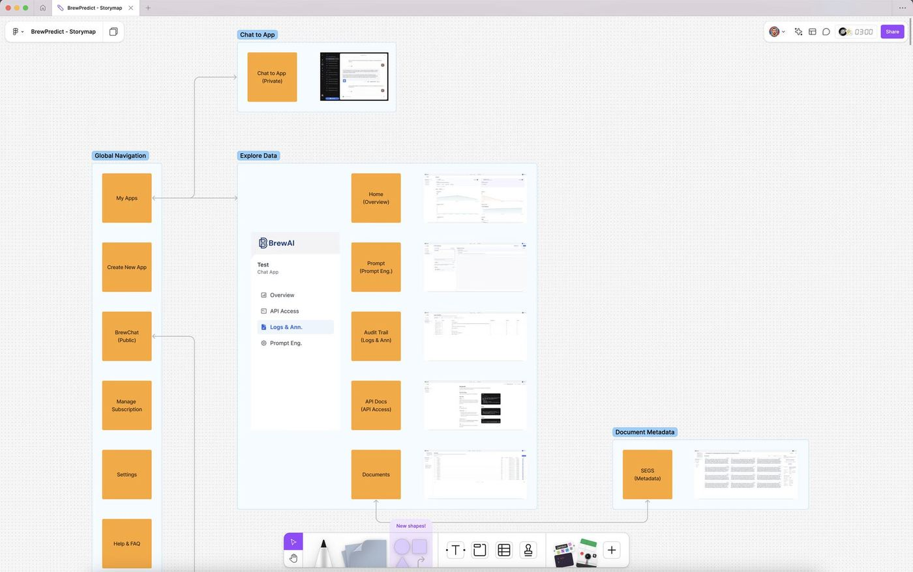
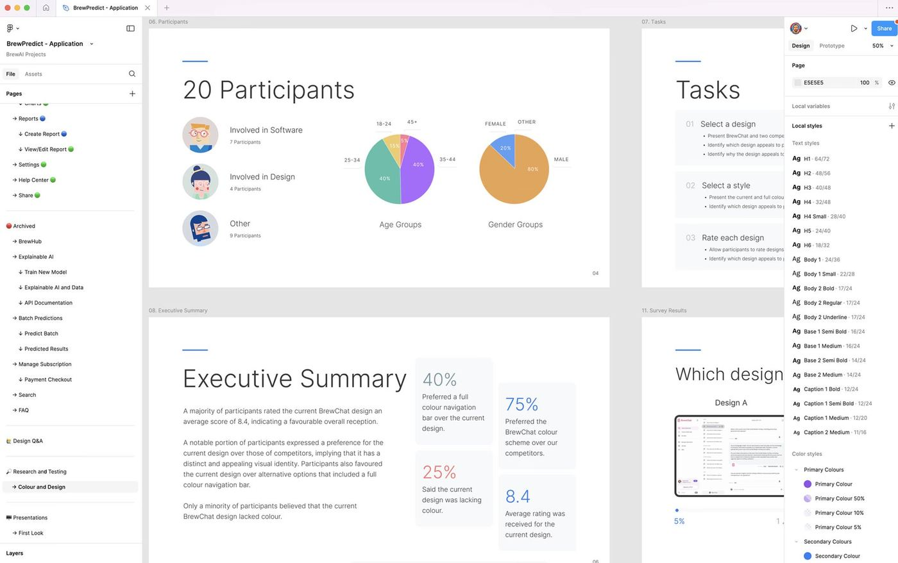
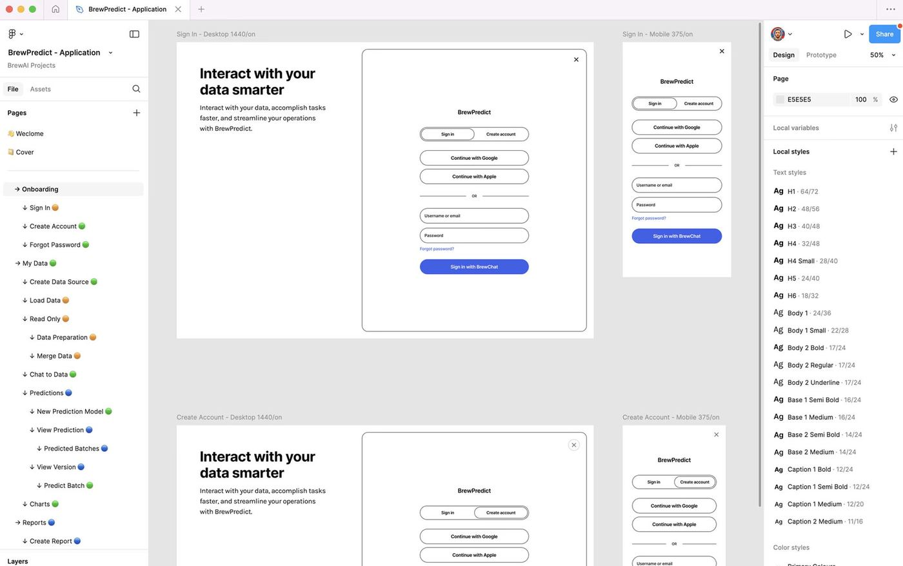
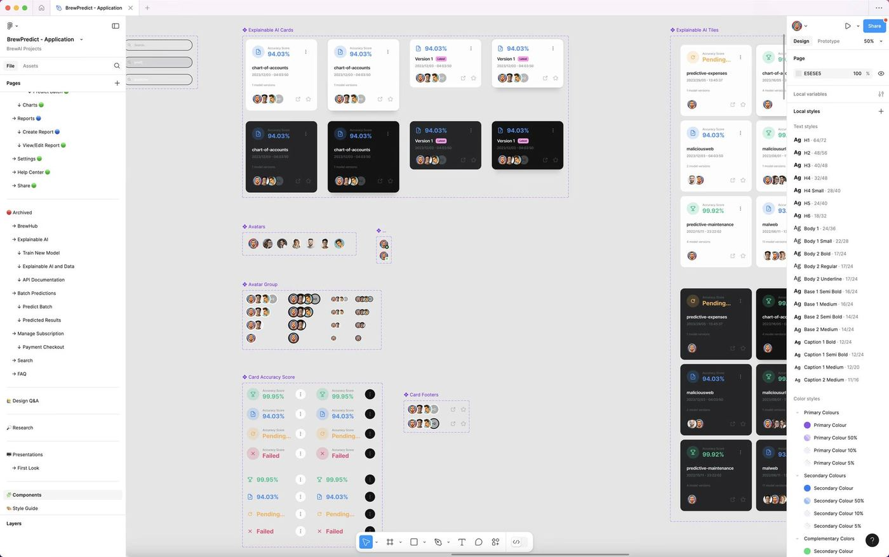
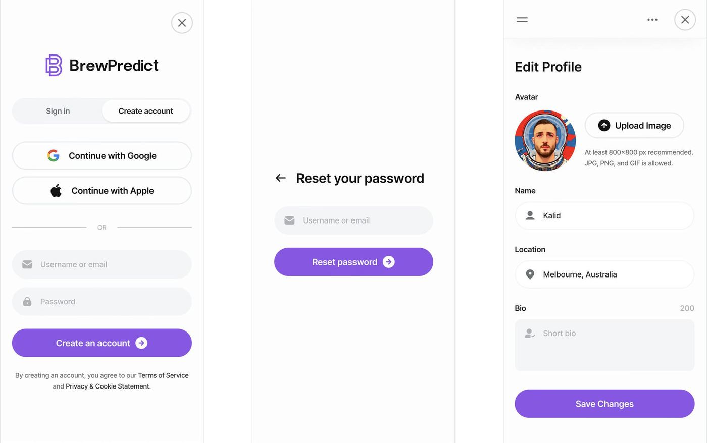
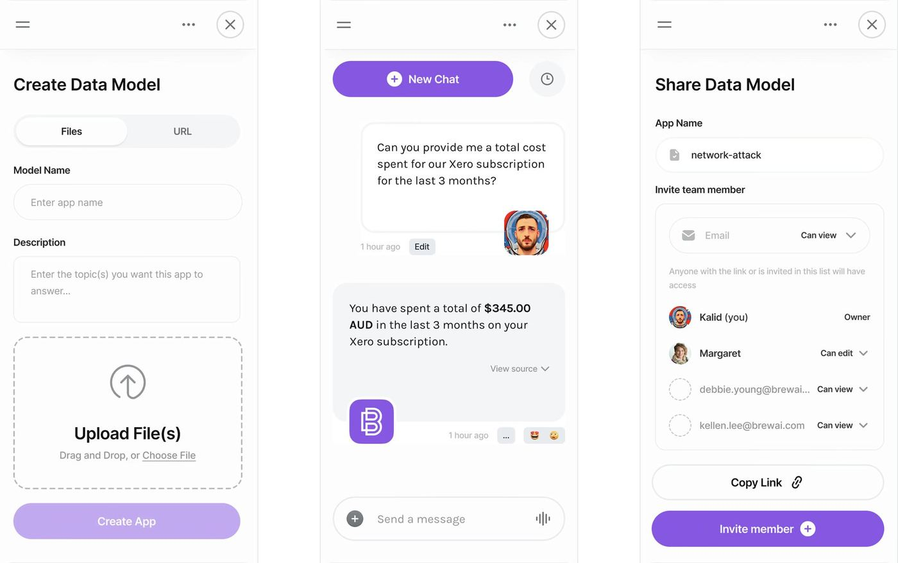
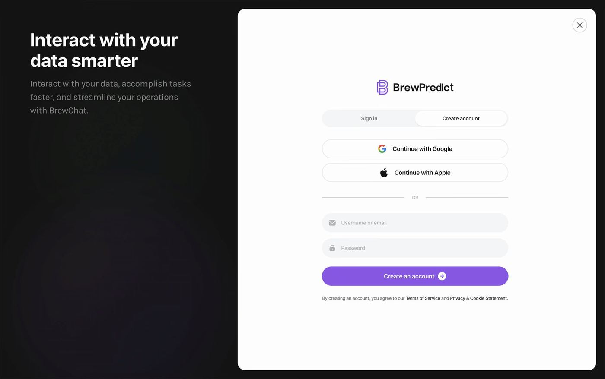
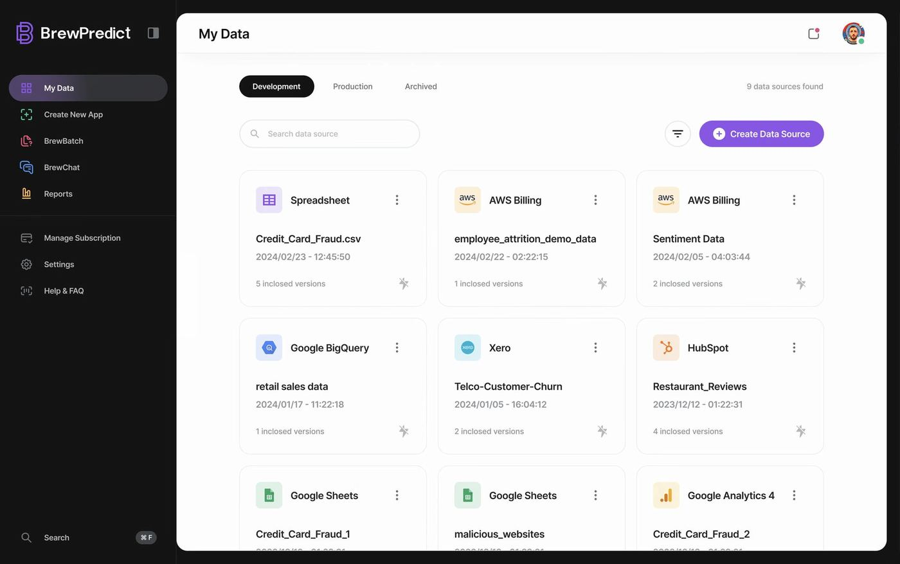
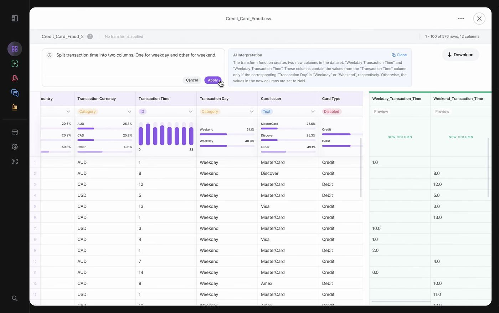
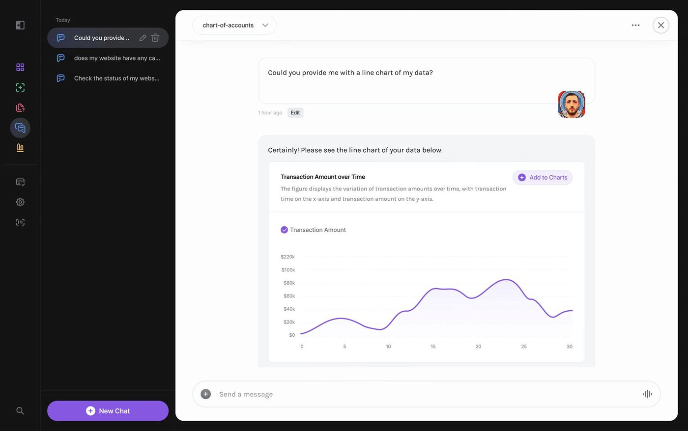

An AI-powered data intelligence platform built to turn messy datasets into clear answers.
BrewPredict is an AI-powered data intelligence platform built by BrewAI, designed to give businesses of all sizes access to predictive modelling, real-time analytics, and automated reporting, without needing a data scientist or technical background to use it. By integrating data from over 600 sources and combining it with AI-driven forecasting, custom dashboards, and private LLM summaries, BrewPredict set out to make enterprise-grade data intelligence accessible to anyone who needed it.
I joined BrewAI as its first designer and a member of the executive team, working across BrewPredict alongside a team of engineers and an AI specialist.
 Live preview
Live preview
As businesses increasingly rely on data to drive decisions, traditional tools have struggled to keep pace. Working with large datasets was slow, technically demanding, and expensive, requiring data scientists or analysts to extract insights that most teams needed quickly and regularly. The barriers to meaningful data analysis were high: complex infrastructure, long lead times for reports, and no clear way for non-technical users to explore or act on their own data.
BrewPredict was conceived to close that gap, bringing the power of predictive analytics and AI-driven insights to business users who previously had no accessible path to them.
The objective was to build an all-in-one data intelligence platform that gave businesses:

Story map of the user journey and flow.

User test results on colour theory.

Onboarding wireframes.

Design system components.
When I joined BrewAI, BrewPredict already existed in a basic form, a functional but rough product that needed a complete rethink before it could go to market with any credibility. Rather than a cosmetic refresh, I redesigned the entire user experience and visual design from the ground up, using the existing product as a reference point for what the platform needed to do, while completely reimagining how it should feel and function for the people using it.
This first phase was about moving fast, establishing a new design direction, rethinking the information architecture, and creating a coherent, accessible interface for a technically complex product. Once the platform was live, I moved into a second phase focused on designing the features that would define BrewPredict's real value:
Throughout both phases I worked closely with the engineering team and an AI specialist, translating design concepts into shipped features and advocating for user clarity in a product where the underlying technology was inherently abstract and complex.
My contributions included:
The core design challenge with BrewPredict was making something genuinely complex feel genuinely simple, without dumbing it down to the point where it lost its power. The users we were designing for weren't data scientists, they were business owners, analysts, and decision-makers who needed insights quickly but didn't want to learn a new technical discipline to get them.
That tension between depth and accessibility ran through every design decision: how much to surface versus how much to hide, how to communicate AI-generated outputs in a way that felt trustworthy rather than opaque, and how to give users enough control without overwhelming them with configuration options.
Trust was another consistent challenge. Convincing business users, and the investors and enterprise clients evaluating the platform, that AI-driven insights were reliable and auditable required deliberate design choices around transparency, explainability, and the audit trail behind every output.

Mobile designs for onboarding.

Mobile designs for data models.

Desktop design for Create Account.

Desktop design for data set dashboard.

Desktop design for data preparation.

Desktop design for chatting to data.
BrewPredict was still in its early stages of release during my time at BrewAI, but the timing proved significant. As ChatGPT's rise in 2023 drove an explosion of interest in AI-powered tools, BrewPredict's foundation, private LLMs, data integration, and AI-driven insights, positioned BrewAI well to respond to that demand. The design system, interaction patterns, and product thinking developed across BrewPredict directly informed and accelerated the conception of BrewLegal and BrewLedger, both of which leveraged what had been built and learned here.
Early adopters provided strong real-world feedback, and the platform was continuously refined based on that input. The interest generated by BrewPredict, both from users and from investors and enterprise clients exploring next-generation data intelligence, helped validate BrewAI's broader direction and set the stage for its most commercially successful products.
BrewPredict was the product that established BrewAI's design foundation and proved that complex AI and data tooling could be made genuinely accessible to non-technical users. The two-phase approach, first establishing a credible, well-designed product to go to market with, then building the features that would define its real value, taught me how to move quickly without sacrificing quality, and how to design for trust in a product category where users were being asked to rely on outputs they couldn't always fully verify themselves.
Here are a few other projects to explore.